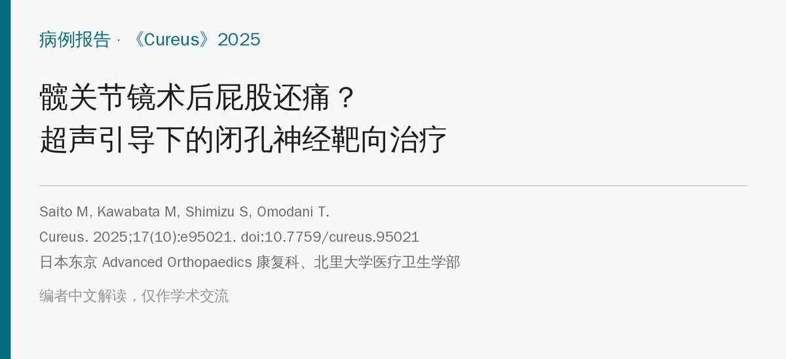
🔖原文信息（编者中文重排）
📚 文献信息
▪ Saito M, Kawabata M, Shimizu S, Omodani T. Ultrasound-Guided Obturator Nerve-Targeted Physical Therapy for Persistent Buttock Pain After Hip Arthroscopy for Femoroacetabular Impingement: A Report of Two Cases. Cureus. 2025;17(10):e95021. doi:10.7759/cureus.95021
▪ 作者单位：日本东京 Advanced Orthopaedics 康复科与骨科、北里大学医疗卫生学部
▪ 文章类型：病例报告（2 例，原文附 8 段操作和超声视频）
• 股骨髋臼撞击症（FAI）关节镜术后 8～11 个月仍有臀部痛的 2 例患者，FABER 试验诱发臀部痛，超声下闭孔外肌收缩差、闭孔神经周围压痛
• 作者怀疑是闭孔神经关节支卡压或滑动受限：每周超声引导手法＋闭孔外肌激活，每两周闭孔神经水分离，注射后做“牵拉—放松”神经滑动
• 每次治疗后 FABER 痛、膝－床距离、闭孔外肌收缩都当场改善；病例 1 第 4 次步行痛消失，两例随访 6 个月以上未复发
• 但只有 2 例、没有对照，几种方法同时用，还需要更多研究验证
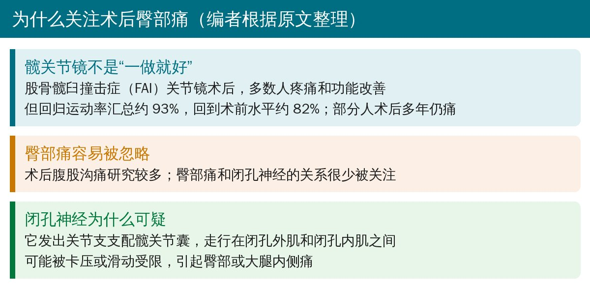
🔖背景（编者根据原文整理）
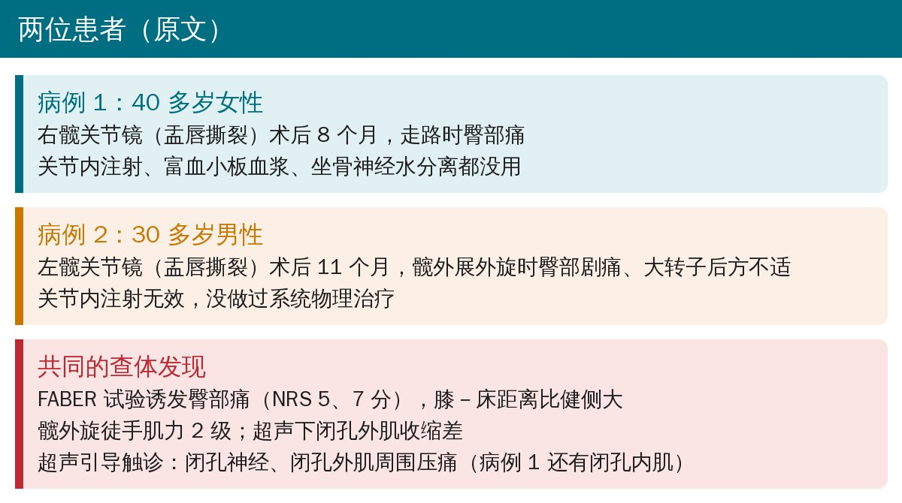
🔖两位患者（据原文整理）
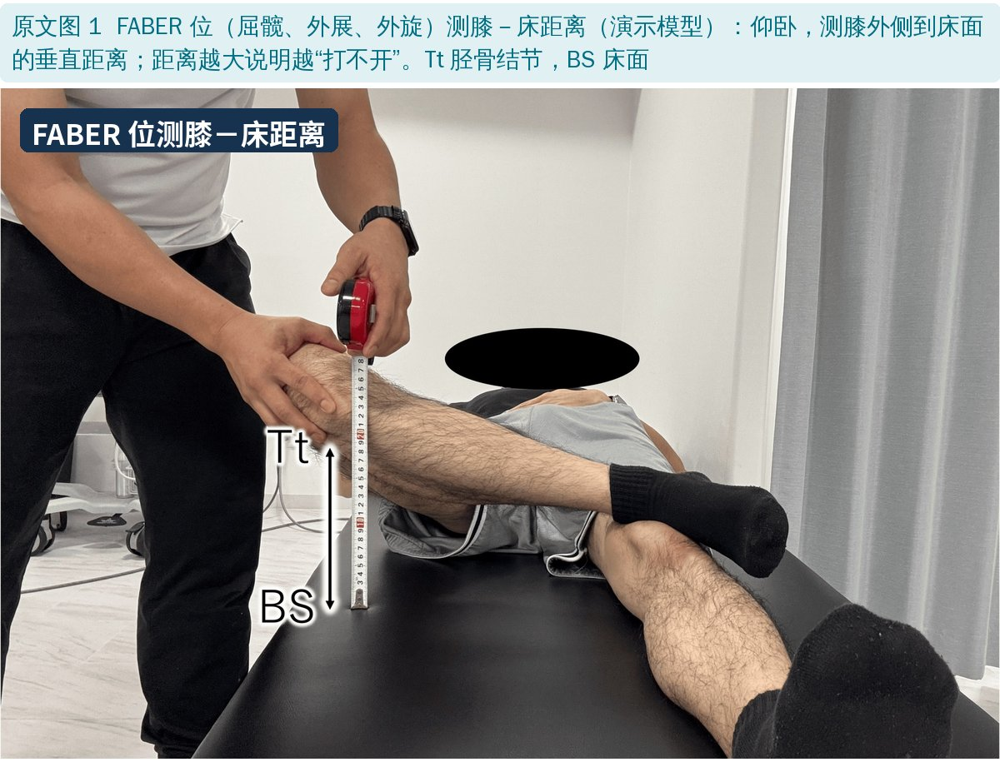
🔖原文图 1：FABER 位测膝－床距离
病例 1 患侧膝－床距离 35.5 cm，健侧 26.5 cm；病例 2 患侧 31.0 cm，健侧 24.5 cm。两人髋外旋徒手肌力都只有 2 级（侧卧屈髋 90°、对抗内旋，无法抗重力保持体位）。
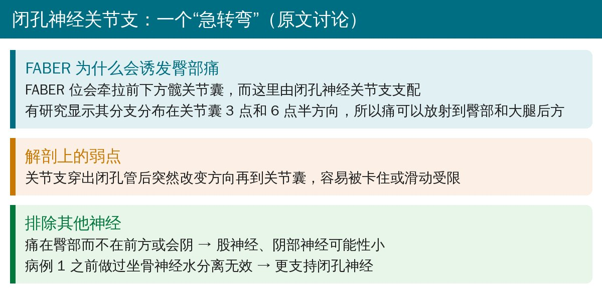
🔖作者的解剖推理（据原文讨论整理）
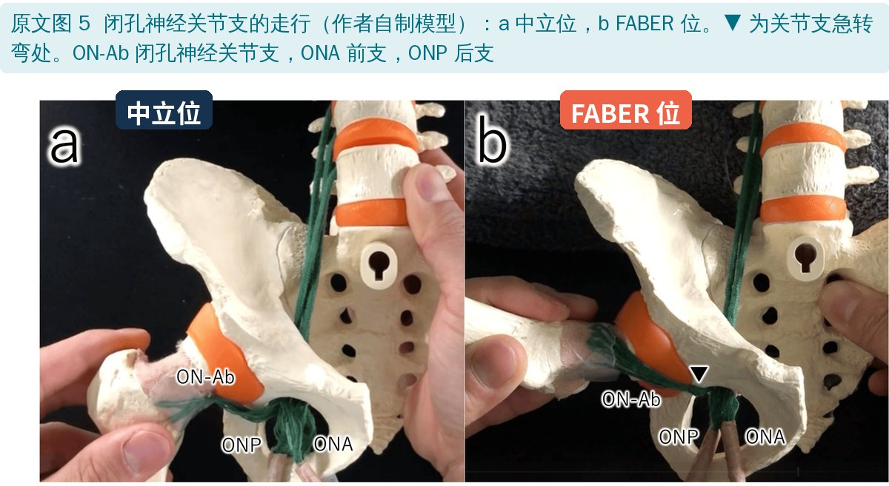
🔖原文图 5：闭孔神经关节支的走行
另有研究发现，髋伸展加外展会让闭孔神经向远端移动。作者认为 FABER 位诱发臀部痛，可能也是类似的神经牵拉机制。
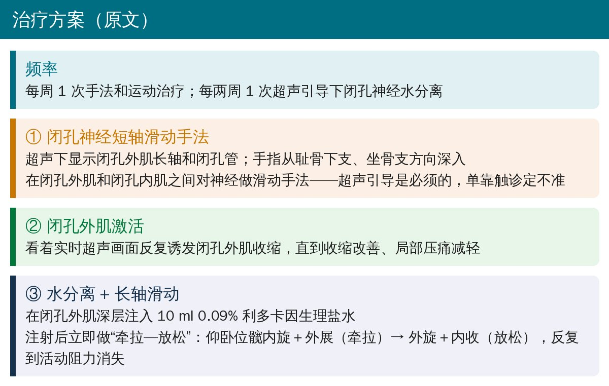
🔖治疗方案（原文）
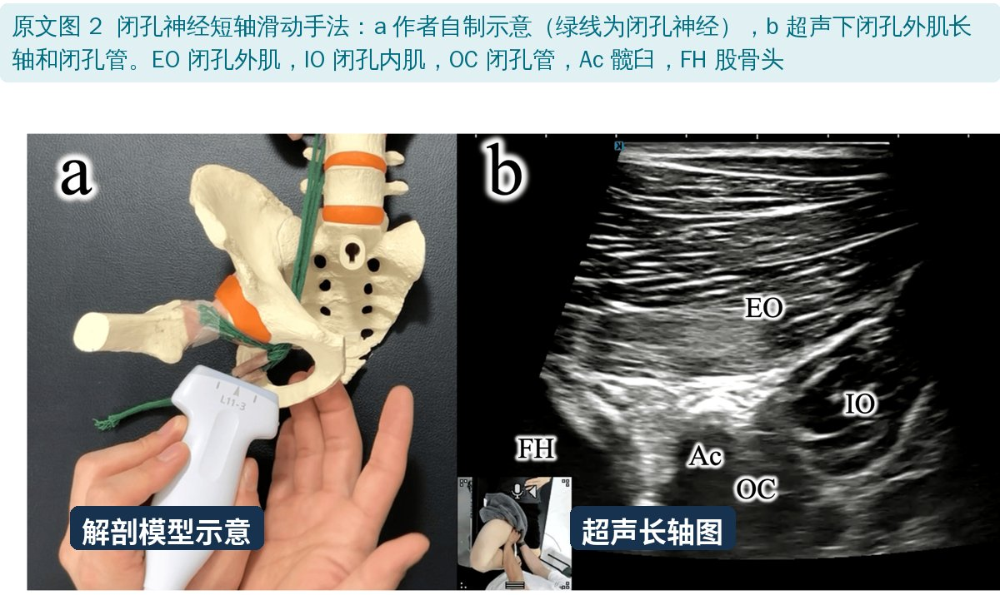
🔖原文图 2：闭孔神经短轴滑动手法
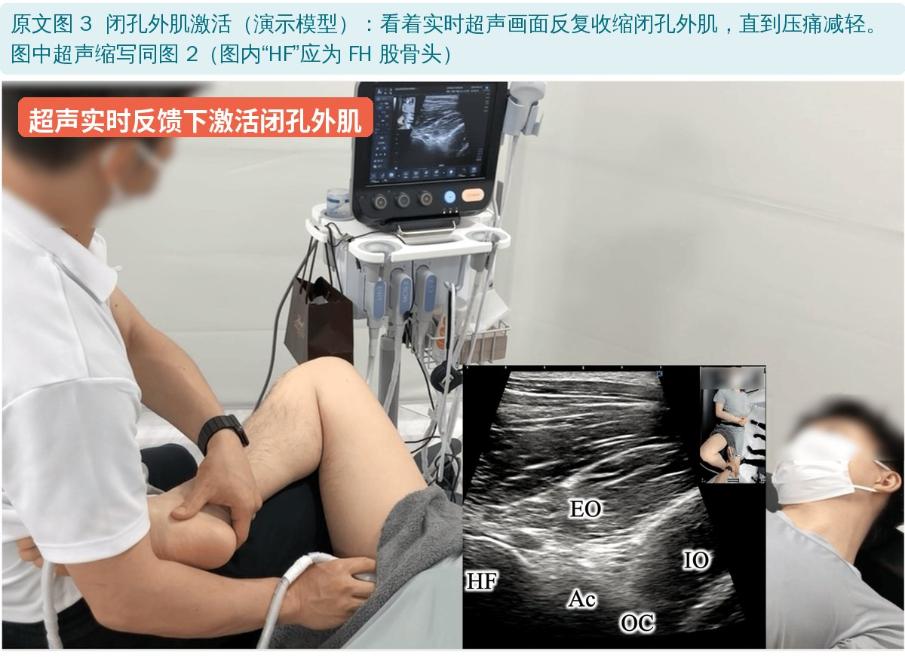
🔖原文图 3：超声反馈下激活闭孔外肌
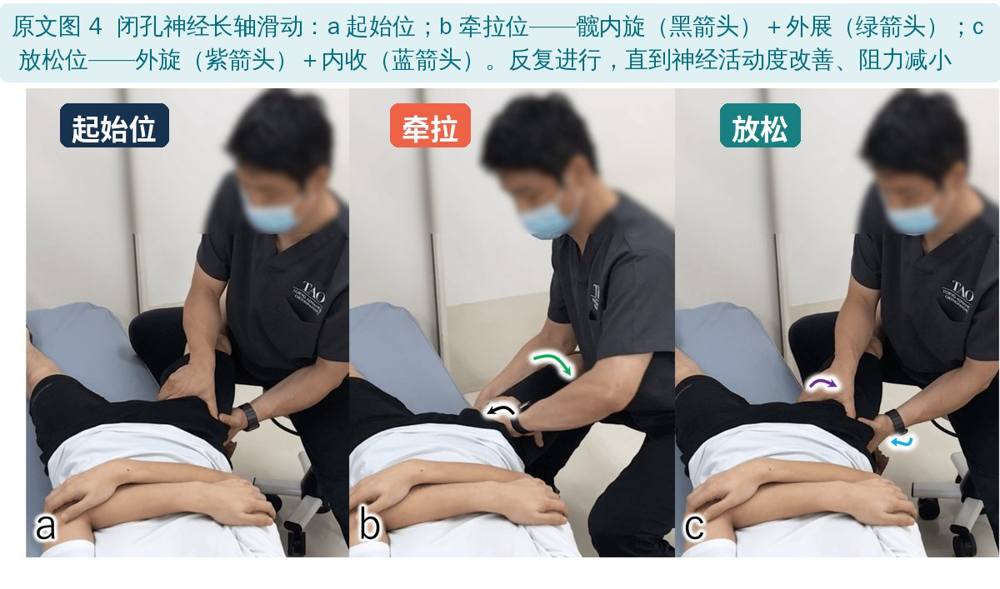
🔖原文图 4：闭孔神经长轴滑动（牵拉—放松）
水分离的位置选在闭孔外肌深层、闭孔管远端。作者引用尸体研究：在闭孔管稍远处注射，药液可以扩散到关节支。注射后立刻配合“牵拉—放松”动作，希望既发挥药液作用，又促进神经滑动。
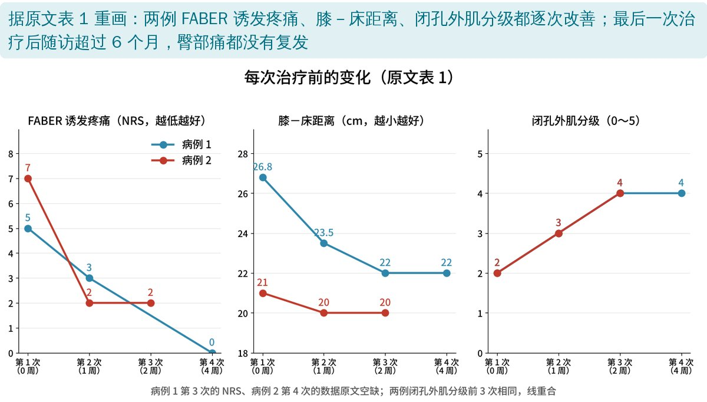
🔖疗程中的变化（据原文表 1 重画）
原文表 1：每次治疗时的评估（第 1～4 次治疗）
| 0 周 | 1 周 | 2 周 | 4 周 | |
|---|---|---|---|---|
| 病例 1 FABER 痛（NRS） | 5 | 3 | — | 0 |
| 病例 1 膝－床距离（cm） | 26.8 | 23.5 | 22 | 22 |
| 病例 1 闭孔外肌分级 | 2 | 3 | 4 | 4 |
| 病例 1 步行痛 | 有 | 有 | 有 | 无 |
| 病例 2 FABER 痛（NRS） | 7 | 2 | 2 | — |
| 病例 2 膝－床距离（cm） | 21 | 20 | 20 | — |
| 病例 2 闭孔外肌分级 | 2 | 3 | 4 | — |
| 病例 2 步行痛 | 有 | 有 | 无 | — |
作者认为，注射后症状立即改善，说明神经减压可能起了主要作用，之后再靠针对性的康复维持效果。最后一次治疗后随访超过 6 个月，两例臀部痛都没有复发。
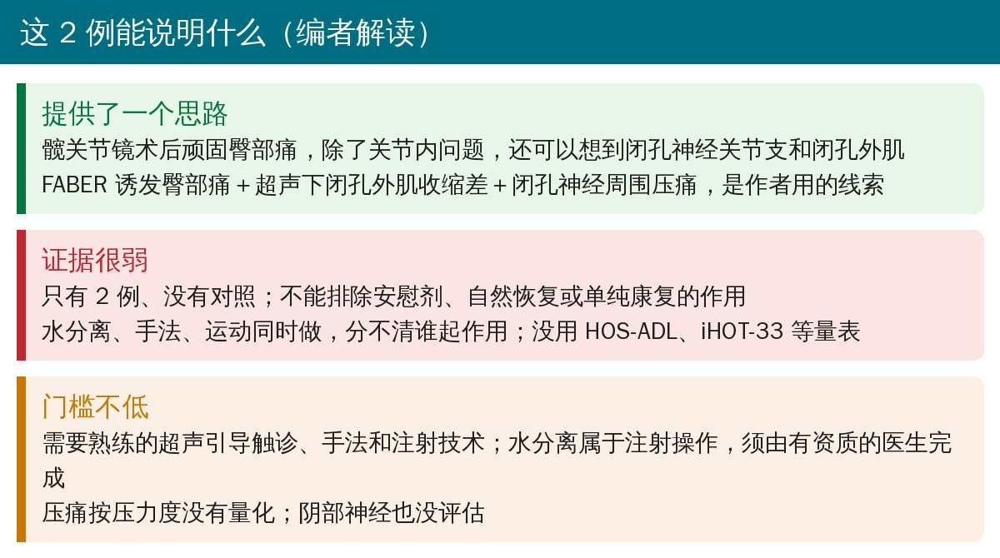
🔖编者解读
• 2 例病例报告、没有对照，作者也承认不能排除安慰剂效应、霍桑效应、自然恢复或单纯康复的作用
• 水分离、手法、运动治疗同时使用，分不清各自贡献；没有使用 HOS-ADL、iHOT-33 等标准化量表
• 超声触诊的按压力度没有量化，阴部神经也没有评估
• 正文写首诊膝－床距离为 35.5 cm（病例 1）、31.0 cm（病例 2），表 1 第 1 次却是 26.8 cm、21 cm，甚至比正文给的健侧值还小
• 正文测的是“髋外旋徒手肌力”，表 1 记为“闭孔外肌分级”，两者不完全是一回事
• 髋关节镜术后顽固臀部痛，关节内注射无效时，可以考虑闭孔神经关节支和闭孔外肌这个方向
• 查体线索：FABER 诱发臀部痛、膝－床距离增大、髋外旋无力；有条件时用超声看闭孔外肌收缩和闭孔神经周围压痛
• 治疗师可做的部分：超声反馈下闭孔外肌激活、髋内旋外展↔外旋内收的神经滑动练习；水分离须由有资质的医生操作
欢迎关注骨科康复小黄公众号，获取更多物理治疗的专业知识！
📄参考文献：
Saito M, Kawabata M, Shimizu S, Omodani T. Ultrasound-Guided Obturator Nerve-Targeted Physical Therapy for Persistent Buttock Pain After Hip Arthroscopy for Femoroacetabular Impingement: A Report of Two Cases. Cureus. 2025;17(10):e95021. doi:10.7759/cureus.95021
原文以知识共享署名 4.0（CC BY 4.0）协议开放获取。原文图 1～5 引自原文，图上中文标签为编者所加（超声结构缩写保留原样）；疗程变化图由编者根据原文表 1 重画；整理卡为编者根据原文撰写。